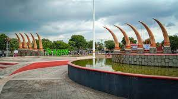
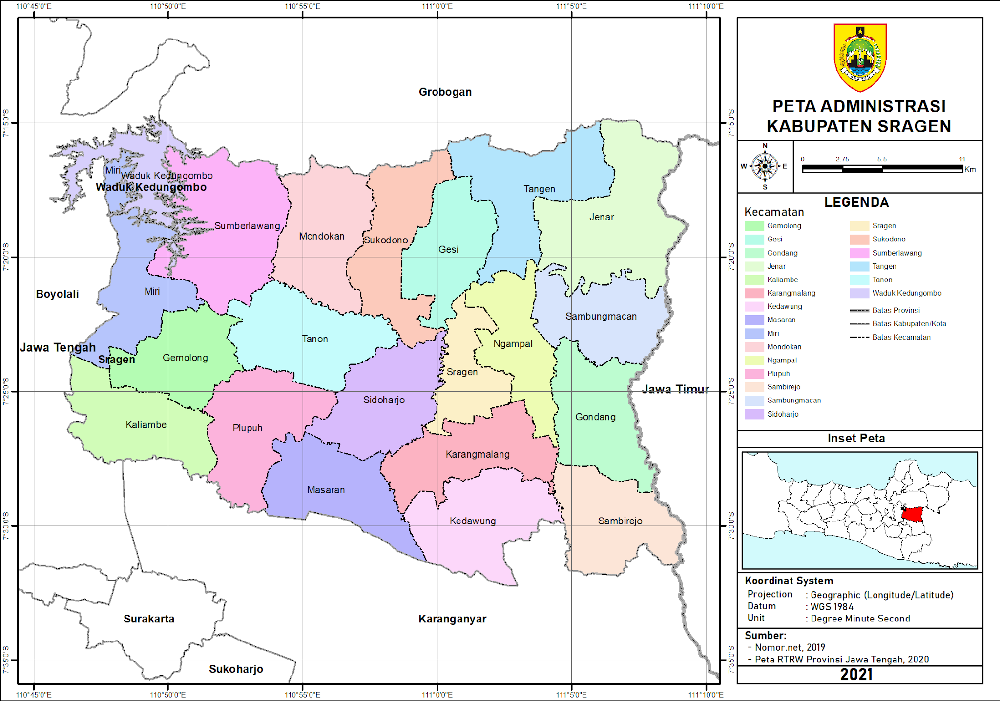
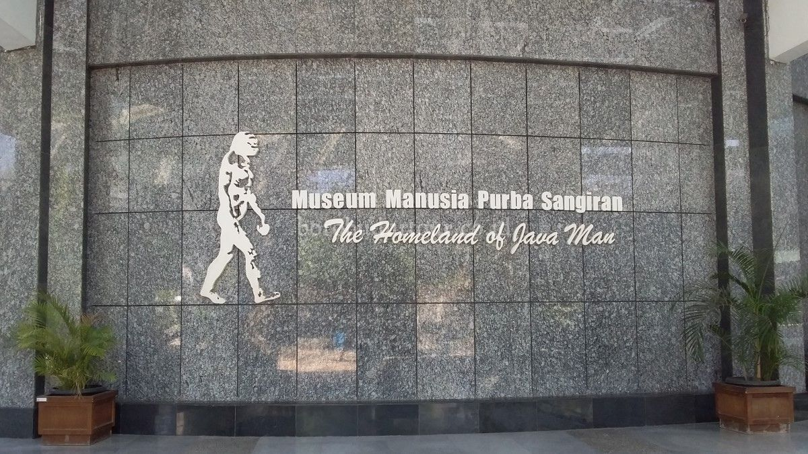
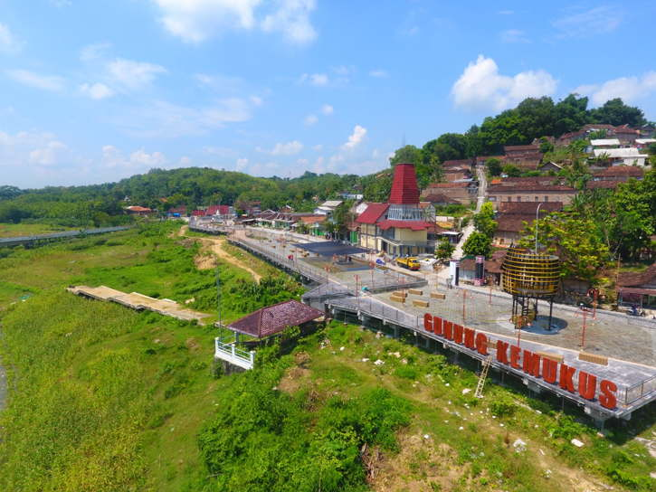

Sejarah
Kabupaten sragen mempunyai hari jadi yaitu Selasa Pon , tanggal , 27 Mei dan berdasarkan sejarah , ketika Pangeran Mangkubumi yang kelak menjadi Sri Sultan HB ke - 1 melakukan perlawanan terhadap Belanda dengan membentuk suatu Pemerintahan di Sukowati sebelah timur
Sragen berasal dari kata pasrah dan legen yang disematkan oleh Pangeran Sukowati
Geografis
Kabupaten Sragen terletak di 7°15' – 7°30' Lintang Selatan dan 110°45' – 111°10' Bujur Timur.wilayahnya pun ada juga di lembah daerah aliran Sungai Bengawan Solo yang mengalir ke arah timur.Sebagian besar merupakan dataran rendah dengan ketinggian antara 70-480 meter di atas permukaan air laut. Sebelah utara berupa perbukitan, bagian dari rangkaian Pegunungan Kendeng.
Wisata
Museum Purbakala Sangiran
merupakan salah satu tempat situs purbakala yang sudah diakui oleh UNESCO , di museum ini berisi fosil - fosil dan tulang manusia purba , lokasinya terletak di Kalijambe , plubuh dan Kecamatan Gemolong
Wisata gunung kemukus
Wisata gunung Kemukus ini termasuk ke wisata religi keluarga yang diresmikan oleh ketua DPR RI Puan Maharani.Setiap hari Wisata Gunung Kemukus selalu rame didatangi peziarah, terutama malam Jumat Pahing